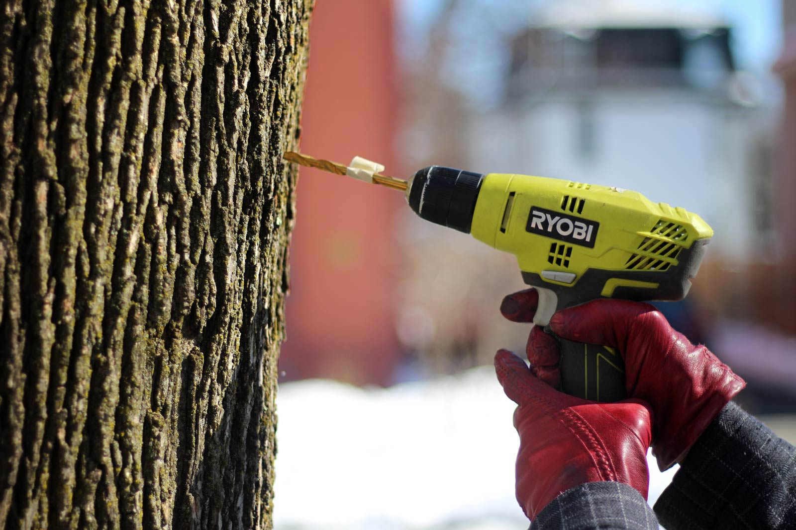
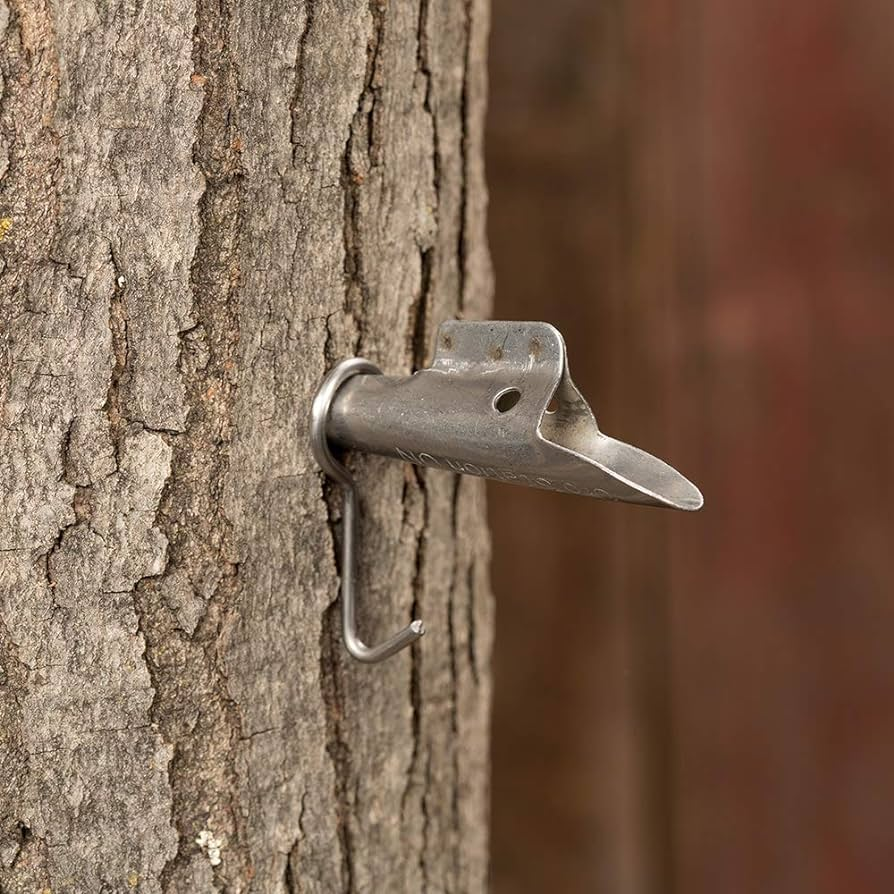
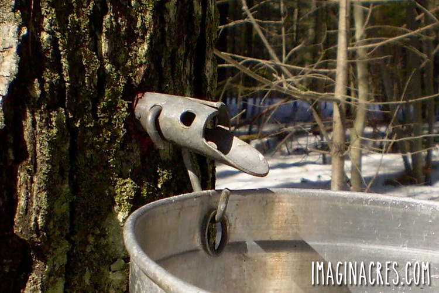
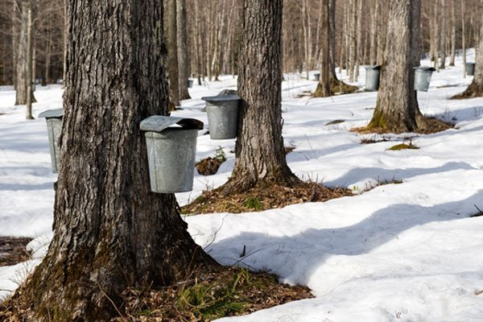
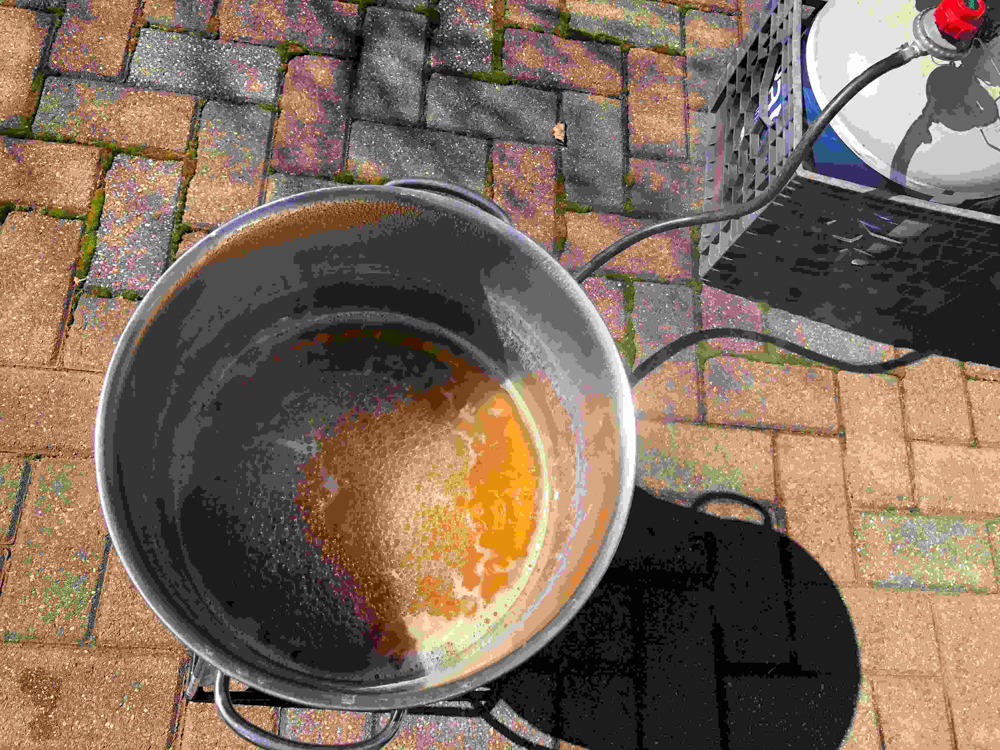
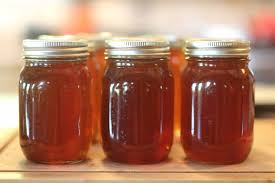

How To Make Maple Syrup
This shows the general process of how many maple sugaring hobbyists will make their maple syrup.
Commercial maple farms will typically have more involved setups involving vacuum tubing to get more sap
from a lot more trees, but your average hobbyist will use buckets or other containers to collect the sap.
Click through the images to find out more.
1 / 6

Once you've identified your tree and tap location, drill a hole into the tree. You should drill the hole slightly upwards
so that gravity will flow down the spile, but almost horizontal so the spile won't fall out. The hole should be
approximatel 1.5 inches deep. There are special drill bits for tapping trees to minimize damage to the tree, and the diameter
should be either 5/16" or 7/16".
2 / 6

Insert your splie into the hole. You can use a rubber mallet to tap it in gently. Make sure your spile diameter
is the same diameter as the hole you drilled - typically 5/16" or 7/16".
3 / 6

Hang your bucket on the spile and attach the lid. Lid is not included in picture, but should be used
to minimize contaminants falling in such as dirt, bugs, or bird poop.
4 / 6

Sap accumulation will take time. If the sap is flowing that day, you will see it slowly start to drip
from the spile into the bucket. Some days will be dry. You need the freeze/thaw cycle and the sap will
flow best when it's a warm day after a cold night. Some days you may get very little or no sap at all,
but it will start flowing again when the weather starts fluctuating between warm and cold again. When the sap is flowing,
you will need to empty your buckets daily or even more often. Keep in mind that even if your bucket isn't full,
sap will spoil if not stored properly.
5 / 6

The next part is simple - boil it. Depending on your sugar content, you may need to reduce it by a factor of 80:1,
so keep this mind. Often this step is done outdoors over a fire, but if boiling inside, be mindful of how much water you'll
be evaporating in your home. Your syrup is done when it boils at 7 degrees higher than the boiling point of water,
in Fahrenheit. This can vary based on humidity and barometric pressure.
6 / 6

Enjoy your maple syrup! It is best stored refrigerated.
❮
❯